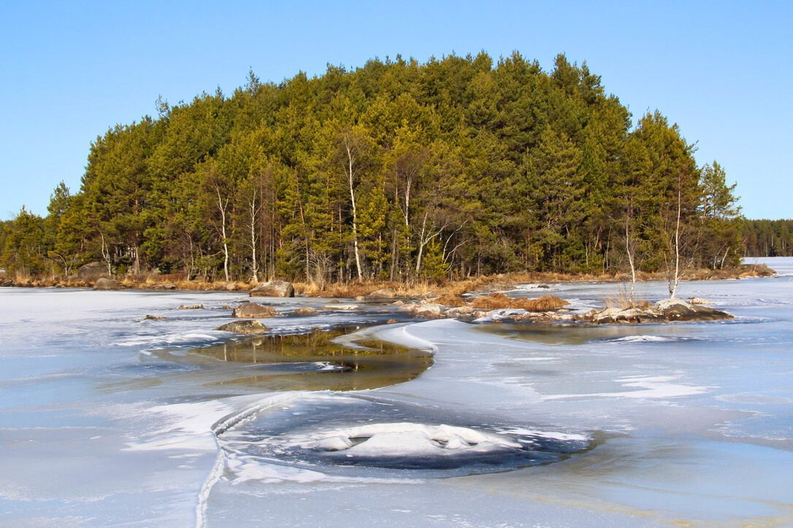
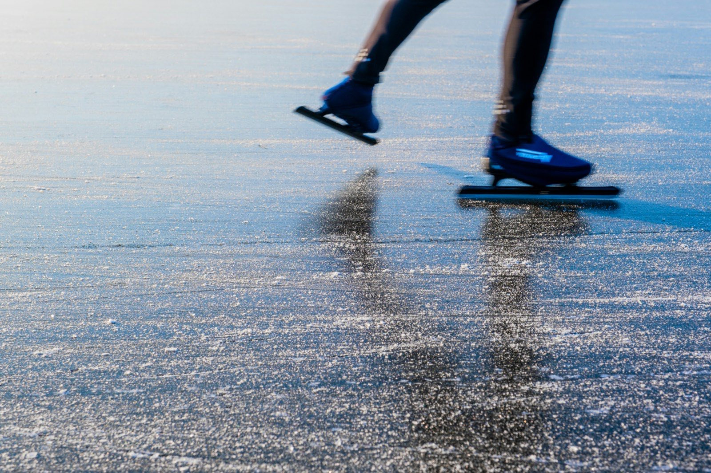
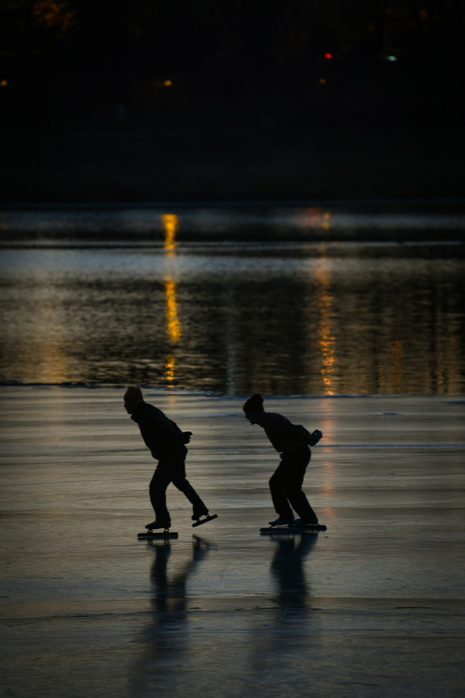

Opastettu retkiluistelu Helsingin seudulla
Koskematonta luonnonjäätä Helsingin seudulla
Ei aurattua luistelurataa vaan koskematonta luonnonjäätä. Oppaan kanssa lähdet retkiluistelemaan Helsingin seudulle sinne, missä jää on juuri nyt paras.
Pyydä opastettua matkaa
Jää päättää, missä luistelemme. Valitsemme oppaan kanssa paikat, joissa luonnonjää tarjoaa juuri sillä hetkellä parhaat mahdollisuudet.
Retkiluistelu luonnonjäällä
Tämän opastetun matkan keskipisteenä on retkiluistelu luonnonjäällä. Lähdet Helsingin seudulla pienellä ryhmällä tutustumaan talviseen maisemaan luistimilla.
Vierailtavat paikat riippuvat jään muodostumisesta, säästä ja saavutettavuudesta. Siksi matka on todellinen opastettu retki eikä luistelulomaa yhdessä paikassa.
Matkan järjestää hollantilainen Novakse. Tämä sivu on saatavilla myös hollanniksi: Gidsreis schaatsen in Finland.

Opastus ja valmistautuminen
Luonnonjäällä luisteleminen vaatii hyvää valmistautumista ja olosuhteiden tuntemusta. Siksi tällä matkalla liikut oppaan kanssa.

-
Ennen matkaa
Ennen matkaa keskustelemme luistelukokemuksestasi ja kunnostasi, jotta voimme arvioida, sopiiko matka sinulle. Saat myös tietoa valmistautumisesta ja tarvittavista varusteista.
-
Paikan päällä
Opas arvioi olosuhteet paikan päällä ja päättää, voiko ja missä voi luistella turvallisesti.
Osallistujien turvallisuus on aina etusijalla.

Kenelle matka sopii?
Matka sopii luistelijoille, jotka tekevät mielellään pidempiä retkiä ja haluavat kokea luonnonjään uudella tavalla.
- Osaat luistella itsenäisesti ja hallitusti
- Kuntosi riittää pidempiin retkiin
- Tunnet olosi turvalliseksi luonnonjäällä
Sinun ei tarvitse olla kilpaluistelija, mutta jonkin verran kokemusta luonnonjäällä luistelusta tarvitaan. Retkillä noudatat oppaan ohjeita ja otat olosuhteet huomioon.
Matka pyynnöstä
Koska jääolosuhteet vaihtelevat talvesta toiseen, työskentelemme pyyntöjen avulla emmekä kiinteän kohteen ja vakioidun matkaohjelman mukaan.
Kerrot, milloin haluat matkustaa, kuinka monta henkilöä tulee mukaan ja mitkä ovat toiveesi. Sen jälkeen katsomme, mitä on mahdollista tehdä.


Pyydä opastettua matkaa
Haluatko lähteä oppaan kanssa retkiluistelemaan Helsingin seudulle?
Täytä pyyntölomake ja kerro, mitä etsit. Otamme sinuun henkilökohtaisesti yhteyttä keskustellaksemme toiveistasi ja vaihtoehdoista.
Pyyntö on sitoumukseton. Et ole sidottu mihinkään.